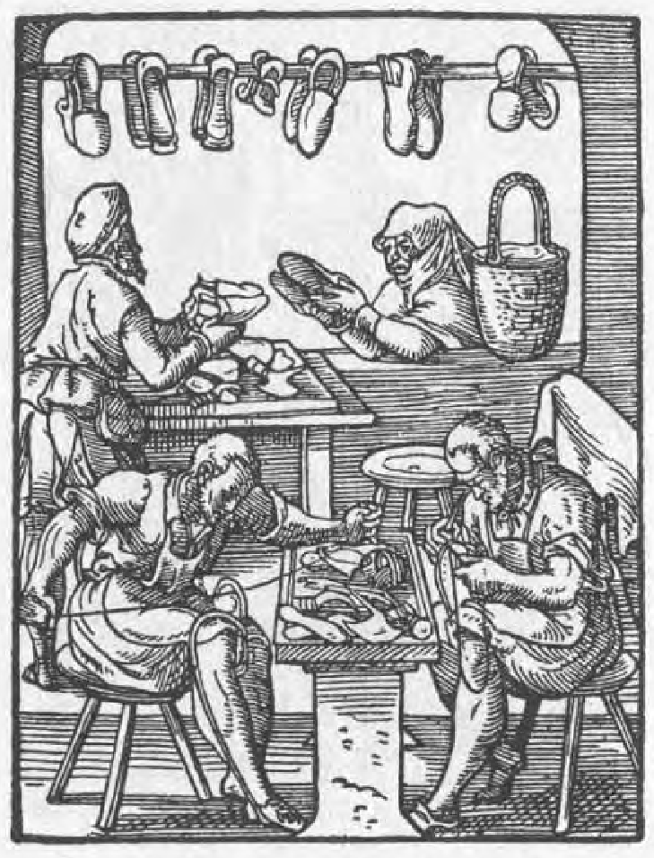
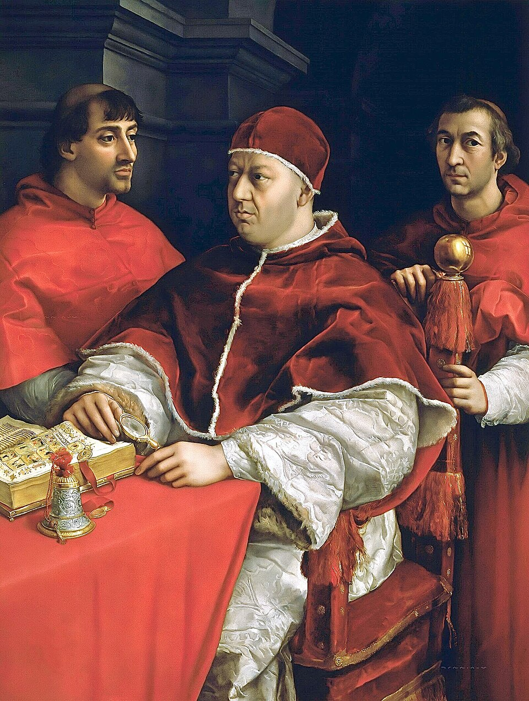
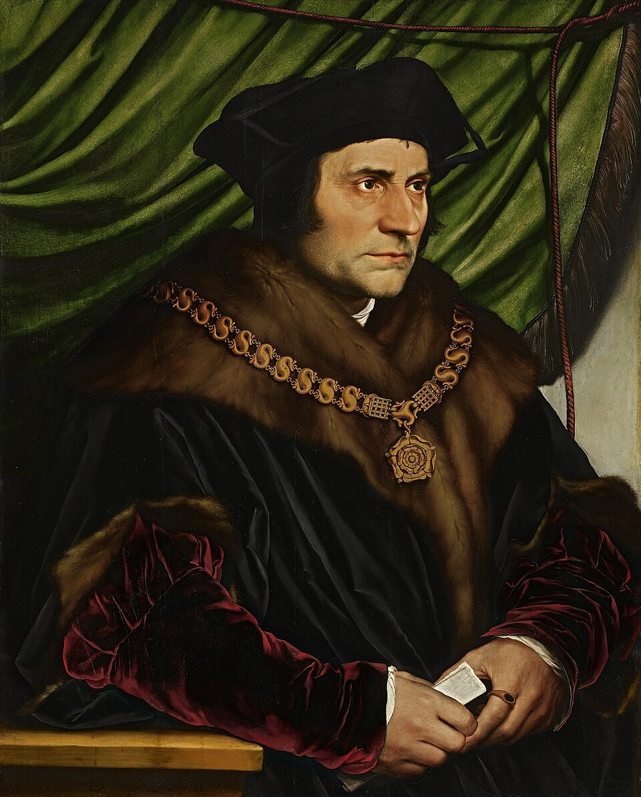
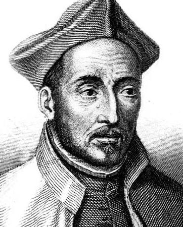
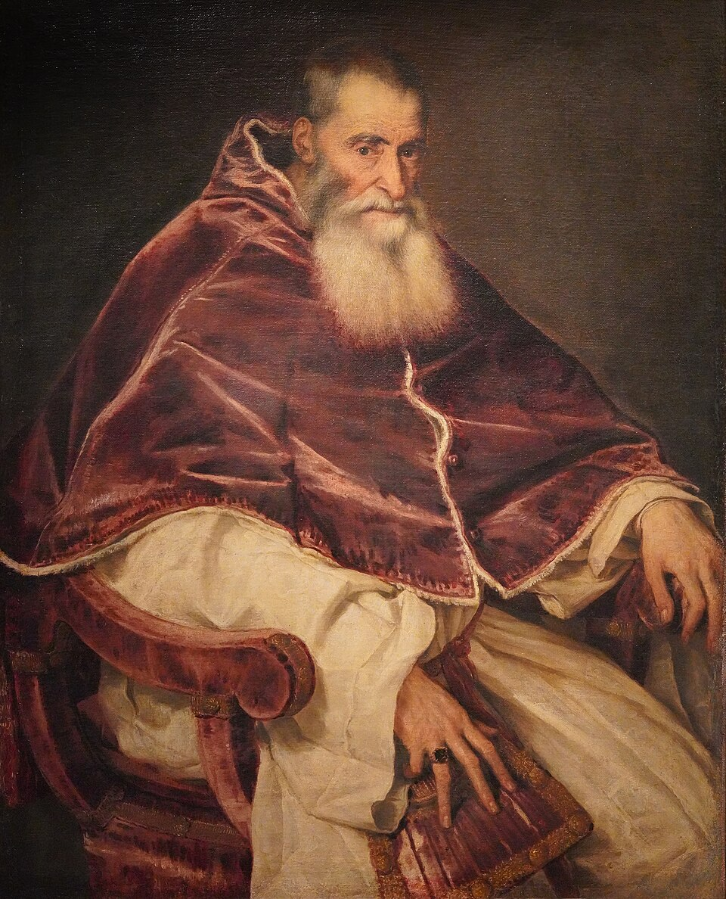

Sources and rights
Image credits
These historical images are local copies of public-domain works made available through Wikimedia Commons. The links below lead to the source records, descriptive metadata, and rights information.
_-_Portr%C3%A4t_des_Martin_Luther_(Lutherhaus_Wittenberg).jpg){kind=link}

,_by_anonymous_-_Museum_Catharijneconvent.jpg){kind=link}

Predestination card
Luca Signorelli, The Calling of the Elect to Heaven, circa 1499–1502. Public domain. Used as a visual metaphor; the artwork is not specifically Calvinist.
Wikimedia Commons record.jpg){kind=link}

Protestant Work Ethic card
Jost Amman and Hans Sachs, The Shoemaker, from the 1568 Book of Trades. Public domain.
Wikimedia Commons record

_-_brightened.jpg){kind=link}


_by_Hans_Holbein_the_Younger.jpg){kind=link}

Act of Supremacy card
A 1534 oath of allegiance associated with Henry VIII’s royal settlement. Public domain. This is a period document, not the Act’s manuscript.
Wikimedia Commons record



Elizabeth I / Via Media
Anonymous, the Armada Portrait, circa 1588. Public domain.
Wikimedia Commons record.jpg){kind=link}



.jpg){kind=link}